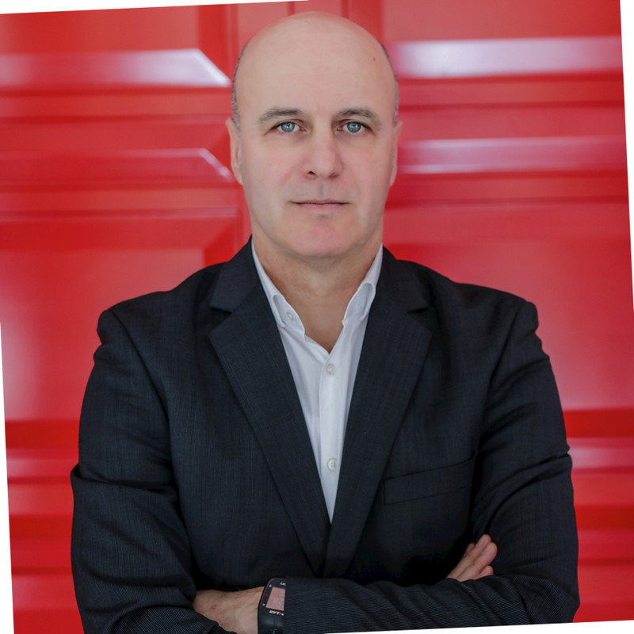
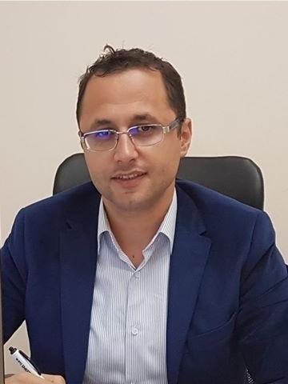

Keynote Speakers
Day 1: 15 December 2023
... To be announced ...
Day 2: 16 December 2023
Prof. Dritan Nace
Biography
Dritan Nace is a Professor at University of Technology of Compiegne, head of the Master in Complex System Engineering which includes specialties like Artificial Intelligence and Optimization, Automation and Robotics, etc. His research interest focus on Operations Research, Mathematical Programming, robust optimization, and Artificial Intelligence. He has a long experience in consulting with several companies.

Prof. Asoc. Dr. Igli Tafa
Biography
Igli Tafa is the General Director and National Cyber Coordinator of AKCESK. He has extensive expertise developed through a rich career in higher education institutions, private and public sector. In the last decade, he has carried out scientific research and trainings for different target groups on cyber security and cyber threat management. He has participated in different national, regional and international projects. Before joining AKCESK, he held various roles related to cyber risk assessment, security systems engineering, application layer security and incident response. He holds a Ph.D. degree in Virtualization Systems in Computer Science from the Polytechnic University of Tirana, and he has prestigious international certifications in the field of cyber security. The passion for promoting cyber security education has ensured his continued success.